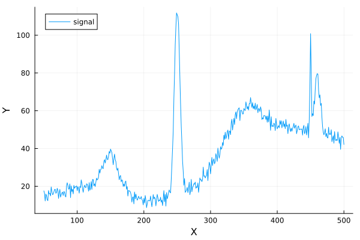
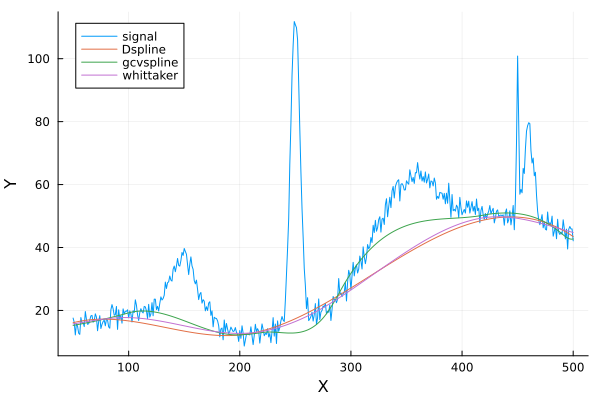
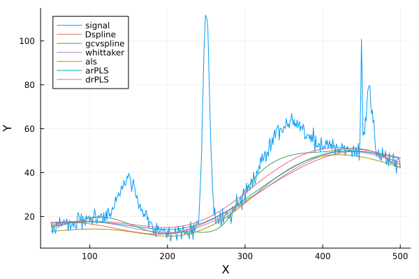

The source files for all examples can be found in /examples.
Baseline examples
Charles Le Losq
August 2017; updated March 2025
Examples of using the baseline function with various algorithms (splines, polynomials, ALS, arPLS...)
Importing the relevant libraries
Spectra to process our data, Plots to plot the results, and Random to generate random numbers
using Spectra
using Plots;
gr()
using RandomCreating a fake signal to know the ground truth
We use the create_peaks function to generate 5 gaussian peaks
# Our arbitrary X axis is
x = collect(50:1.0:500)
# and now our signal can be created with create_peaks() like this:
peak_infos = [
Dict(:type => :gaussian, :amplitude => 20.0, :center => 150.0, :hwhm => 15.0),
Dict(:type => :gaussian, :amplitude => 100.0, :center => 250.0, :hwhm => 5.0),
Dict(:type => :gaussian, :amplitude => 50.0, :center => 450.0, :hwhm => 1.0),
Dict(:type => :gaussian, :amplitude => 20.0, :center => 350.0, :hwhm => 30.0),
Dict(:type => :gaussian, :amplitude => 30.0, :center => 460.0, :hwhm => 5.0),
]
peaks, total = create_peaks(x, peak_infos)
# some background: a large gaussian + linear
bkg = 10.0 .* sin.(x ./ 50.0) + 0.1 .* x
# real data have noise: here some Gaussian noise
noise = 2.0 * randn!(ones(size(x, 1)))
# the observed signal is:
y = total + noise + bkg
# Let's have a look at it using Plots:
p1 = plot(x, y; label="signal", xlabel="X", ylabel="Y")
Calling the baseline() function to remove the background
see documentation at http://charlesll.github.io/Spectra.jl/stable/PreProcessing/#baseline-subtraction
ROI-based methods
The baseline function can be used to remove the background from a signal. The function takes the following arguments:
x: the x-axis of the signaly: the y-axis of the signalroi: if required, the regions of interest where the signal is locatedmethod: the method to use to remove the background
For polynomial and spline methods, the roi argument is required and should be a n x 2 array with the start and end of the region of interest. It choice is thus important. It defines the portions of the spectra where we want to fit the signal background. roi should be an n x 2 array, see baseline documentation.
# Here we use the following ROIs:
roi = [0 100.0; 200 220; 280 290; 420 430; 480 490]
# Using those ROI, we call the Dspline method from Dierckx.jl, setting ourselfs the smoothing parameter s=1.3.
# The smoothing parameter s is a trade-off between the smoothness of the spline and the closeness of the fit to the data.
y_dspl, bas_dspl = baseline(x, vec(y); roi=roi, method="Dspline", s=1.3)
# We could use also the GCV method to decide of the smoothing spline coefficient automatically. This
# is what does the "gcvspline" method. Note that you can also impose s for this gcvspline method.
y_gcvspl, bas_gcvspl = baseline(x, vec(y); roi=roi, method="gcvspline")
# Now we also implemented the Whittaker smoother as a baseline method. Basically, we use the smoother on the signal in the ROIs, and it works fairly well!
y_whitt, bas_whitt = baseline(x, y; roi=roi, method="whittaker", lambda=1.0e5)
# plotting the baselines
plot!(x, [bas_dspl, bas_gcvspl, bas_whitt]; labels=["Dspline" "gcvspline" "whittaker"])
ROI-free methods
The baseline function can also be used to remove the background from a signal without specifying the ROI. For that, you can use the following methods:
als: the Asymmetric Least Squares methodarPLS: the Adaptive Penalized Least Squares methoddrPLS: the Damped Regularized Penalized Least Squares method
y_als, bas_als = baseline(x, y; roi=roi, method="als", p=0.01, lambda=10.0^5, niter=10)
y_arpls, bas_arpls = baseline(x, y; method="arPLS", p=0.01, lambda=10.0^6, ratio=0.01)
y_drpls, bas_drpls = baseline(x, y; method="drPLS", ratio=0.1, lambda=10.0^6)
# plotting the baselines
plot!(x, [bas_als, bas_arpls, bas_drpls]; labels=["als" "arPLS" "drPLS"])
This page was generated using Literate.jl.